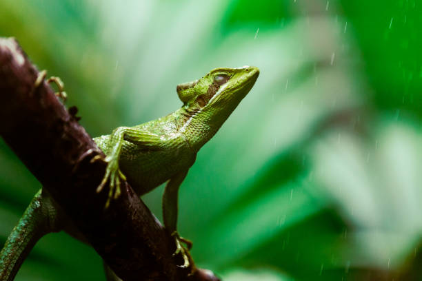
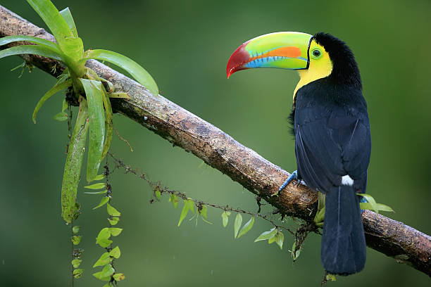
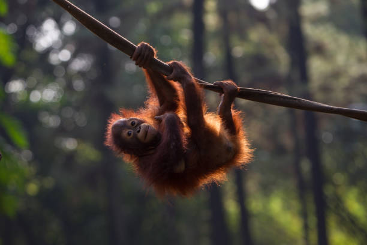

Evidence of an ancient civilization is indicated through irrigation, and other structures found at the park, while the area is associated with much legends and history. Rewinding to 500 BC, King Vijaya landed at Thambapanni (meaning “red earth” in Sanskrit), which is located at Kudarimalai area.
Further Paleolithic and Mesolithic records are found from several locations. Fast forward to more recent times, the park was closed for the public due to the onset of the civil conflict from mid 1980s up to February 2010, and IP is currently undergoing rehabilitation infrastructure and strengthening its management to bring back its glorious past.